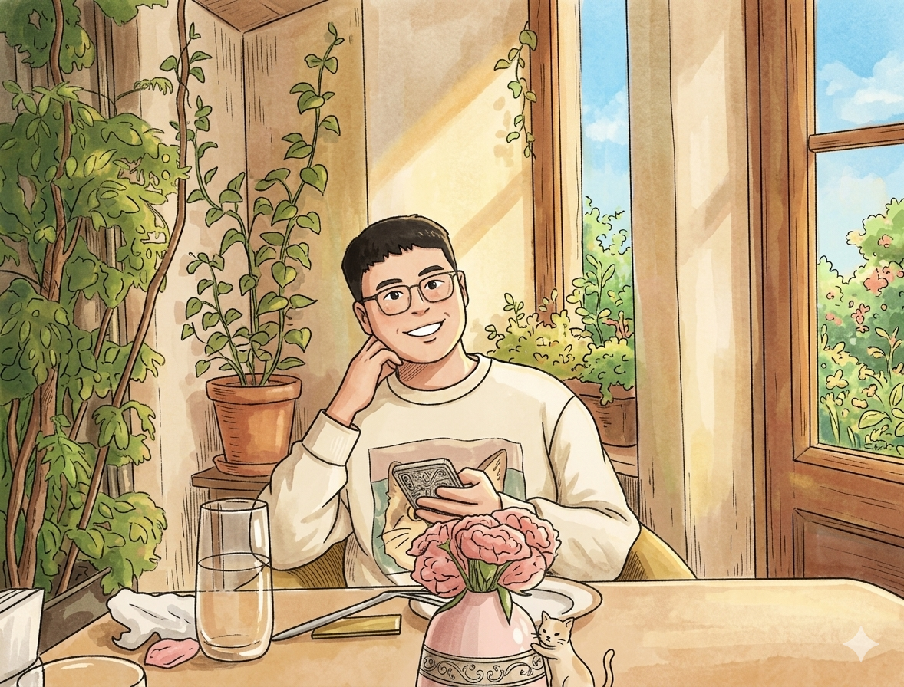

Research Scientist, ByteDance (US)
Work and live in San Jose (US) & Shenzhen (China)
yuanjk0921@outlook.com

Biography Selected Publications Professional Service
I am a Research Scientist at ByteDance (US), working on visual generative foundation models, such as Seedance 2.0, and their applications and products.
During 2023–2025, I worked as a Research Scientist in the Hunyuan Multimodal Generation Team at Tencent with Wei Liu, Zhao Zhong, and Liefeng Bo, where my research focused on multimodal generative foundation models and downstream generation tasks.
During 2022–2023, I was a research intern in the Computer Vision Group at Baidu with Xinyu Zhang and Jingdong Wang, where my research focused on visual self-supervised pre-training.
I received my Ph.D. degree in Computer Science from Zhejiang University (2019–2024), co-supervised by Professors Kun Kuang, Lanfen Lin, and Fei Wu. I received my B.E. degree in Automation from Zhejiang University of Technology (2015–2019), supervised by Professor Qi Xuan.
I have been fortunate to work closely with friends including Defang Chen and Yue Ma; their insights have profoundly shaped my approach to research.
Full Publication List → Google Scholar Profile Semantic Scholar Profile
(co-)first author✳ corresponding author✉
Follow-Your-Preference: Towards Preference-Aligned Image Inpainting
Yutao Shen✳, ✳✉, Toru Aonishi, Hideki Nakayama, et al.and Yue Ma✉
International Conference on Learning Representations (ICLR), 2026
Sep 27, 2025 | Follow-Your-Preference | code
HunyuanVideo: A Systematic Framework For Large Video Generative Models
Hunyuan Multimodal Generation Team at Tencent (as a team member)
arXiv, 2024
Dec 03, 2024 | HunyuanVideo | code
It introduces an open-source diffusion model for video generation, which has received over 1000 citations and over 11,000 GitHub stars (as of May 2026).
Follow-Your-Canvas: Higher-Resolution Video Outpainting with Extensive Content Generation
Qihua Chen✳, Yue Ma✳, Hongfa Wang✳, ✳✉, et al.Wenzhe Zhao, Qi Tian, Hongmei Wang, Shaobo Min, Qifeng Chen✉, and Wei Liu
AAAI Conference on Artificial Intelligence (AAAI), 2025
Sep 02, 2024 | Follow-Your-Canvas | code
HAP: Structure-Aware Masked Image Modeling for Human-Centric Perception
✳, Xinyu Zhang✳✉, Hao Zhou, Jian Wang, et al.Zhongwei Qiu, Zhiyin Shao, Shaofeng Zhang, Sifan Long, and Kun Kuang✉, Kun Yao, Junyu Han, Errui Ding, Lanfen Lin, Fei Wu, and Jingdong Wang✉
Advances in Neural Information Processing Systems (NeurIPS), 2023
Label-Efficient Domain Generalization via Collaborative Exploration and Generalization
✳, Xu Ma✳, Defang Chen, Kun Kuang✉, et al.Fei Wu, and Lanfen Lin
International Conference on Multimedia (MM), 2022
Domain-Specific Bias Filtering for Single Labeled Domain Generalization
✳, Xu Ma✳, Defang Chen, Kun Kuang✉, et al.Fei Wu, and Lanfen Lin
International Journal of Computer Vision (IJCV), 2022
Collaborative Semantic Aggregation and Calibration for Federated Domain Generalization
✳, Xu Ma✳, Defang Chen, Fei Wu, et al.Lanfen Lin, and Kun Kuang✉
IEEE Transactions on Knowledge and Data Engineering (TKDE), 2023
Last updated on May 18, 2026 at 10:47 (UTC-7) 📖